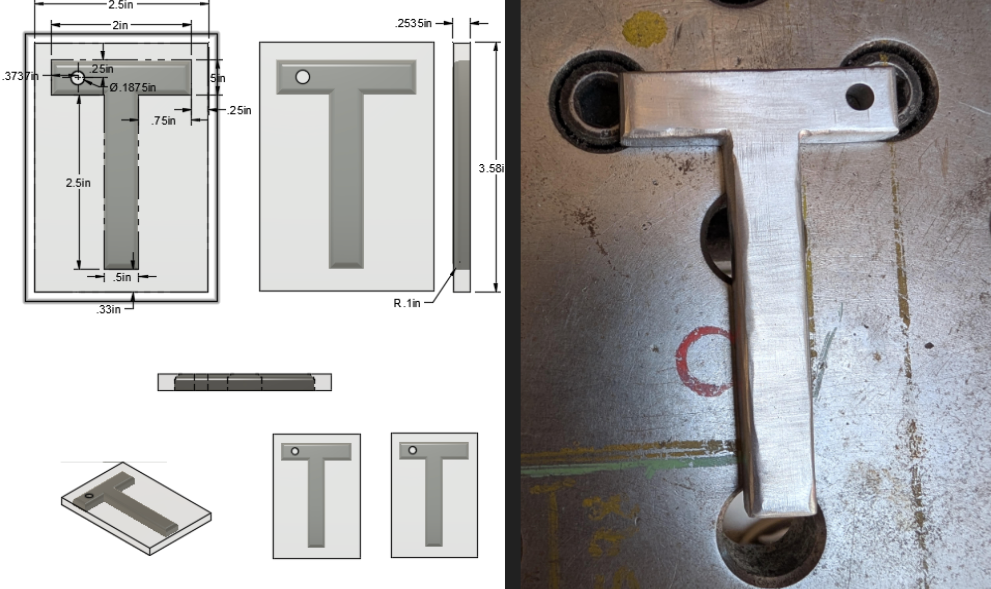
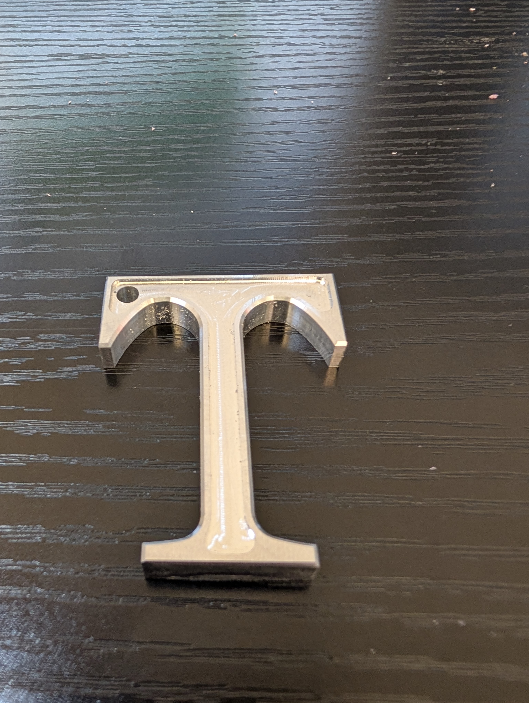

Fabricating custom letter shapes from metal stock using manual tools.
About The Projects
This project documents my process of learning and refining fabrication techniques. Starting with basic cuts and progressing to more complex shapes, and then CNC, I experimented with various tools including bandsaws, jigsaws, Tormachs, and dremels to create custom letter designs from raw stock. It was a fantastic exercise in precision, refinedment, and problem-solving.
Project Gallery

The initial 'T' design. This was an early experiment focusing on the importance of using guides for straight cuts and learning the unique challenges of each tool.The more refined 'R' design, which incorporated lessons from the first piece. This involved complex relief cuts with a jigsaw and a deliberate, stylistic finish.

Redesigned the original basic T letter keychain after I was more comfortable in CAD/CAM. I CAM’d out the toolpaths, and created the remade design on a Tormach with CNC machining. Added a ⅛ inch groove indentation pocket with an end mill to the center and a .02 chamfer edge to it. Finally,
I used a vertical band saw, sander, and filed to remove the tabs.